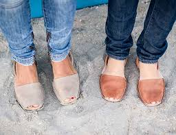
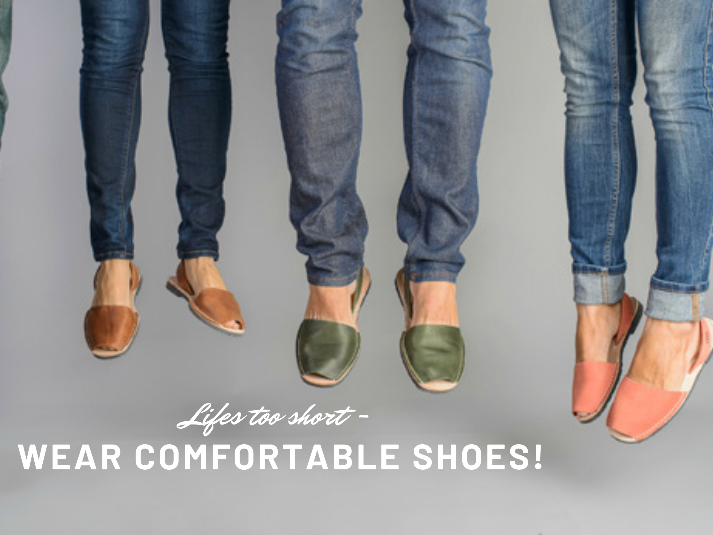

Avarcas
Click bellow for my full portfolio
Download Portfolio- © Untitled
- Design: HTML5 UP
Introduction

Avarcas is a shoe company making open-toe sandals in a traditional Spanish design first crafted by farmers in the 19th century. Avarcas are handcrafted from premium Spanish leather. Their footwear are comfortable, versatile, and built to withstand years of wear. The first Avarcas were crafted in the 19th century by farmers on the Mediterranean island of Menorca, Spain. Their workshop is located on the same island, where they honor the tradition and heritage of the first Avarcas sandals by slowly handcrafting them paying the utmost attention to each and every detail. This is why their sandals are very comfortable and will last for years to come.Despite the rather widespread opinion, footwear plays an important role in the overall appearance of the individual. Along with hats and accessories, this part of one’s wardrobe perfectly emphasizes the identity of its owner and effectively compliments the entire image as a whole. It has become an essential piece that is put on at any time of the day and worn with pleasure. In order to update one’s collection, people often pay attention to bright posters and signs. However, shoe advertisements either often seduce us, or fail to evoke any emotion at all. What is the reason for this? What methods and techniques do advertisers use to attract buyers? In addition, how effective are they?
Check out Avarcas by clicking bellow
Avarcas website